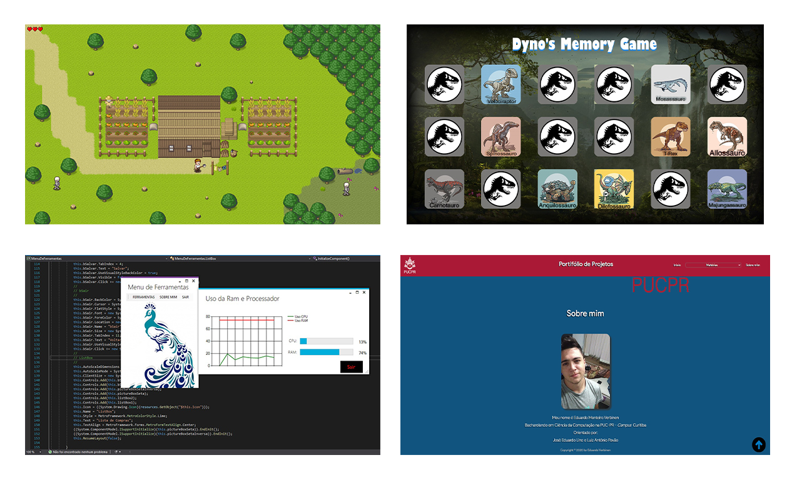
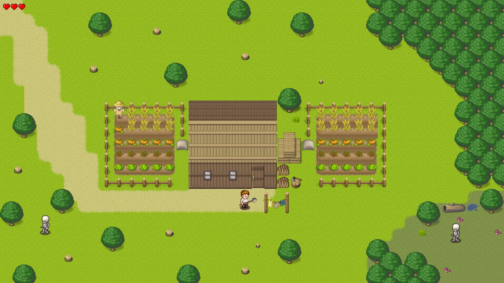
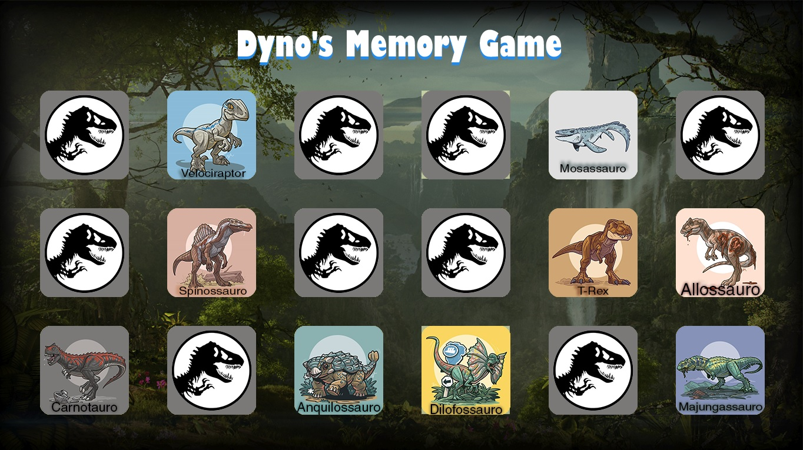
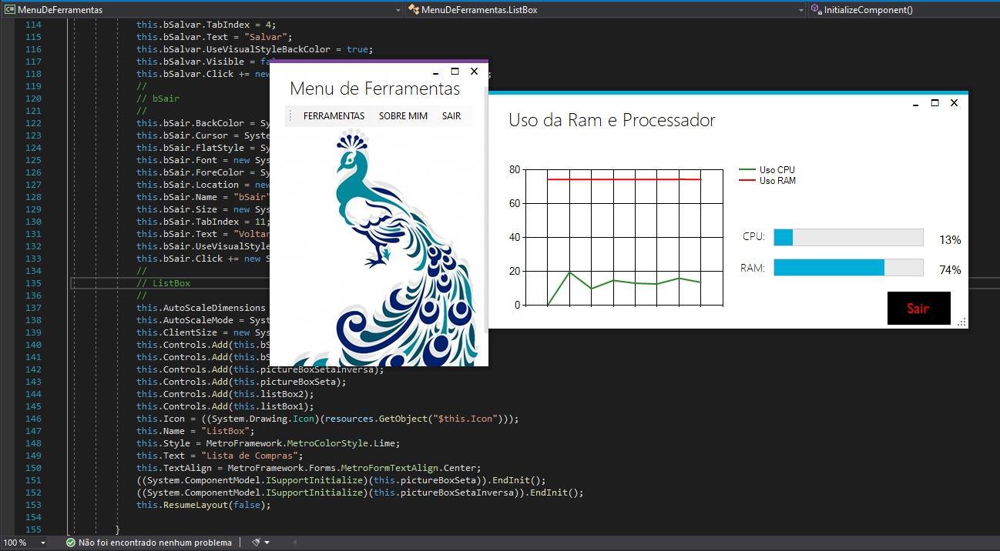
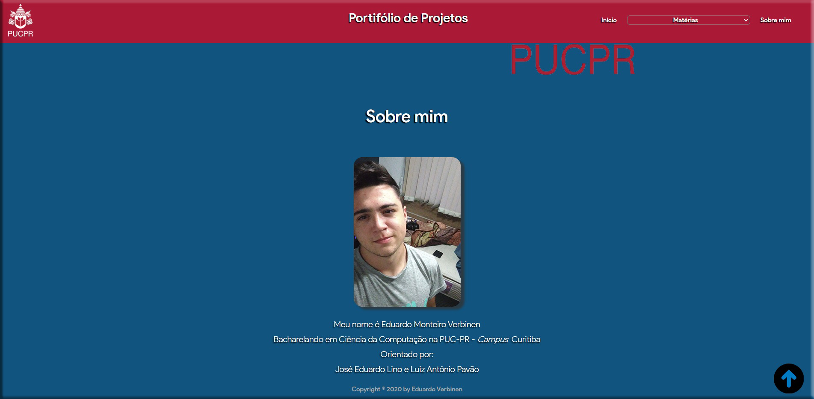

XP Criativa: Navegando na Computação
|
Ministrado pelos professores Me. José Eduardo Lino e Me. Luiz Antônio Pavão é uma matéria cujo intuito é estimular a curiosidade e a proatividade dos alunos do curso. Os projetos passados nessa disciplina nunca visavam obter um resultado cirúrgico e único, mas sim, tinham como objetivo integrar o aluno no mundo da computação e nos ensinar a resolver problemas por nossa própria conta, visto que era explicado uma base sobre a ferramenta a ser utilizada, e então o aluno deveria por sua conta aprender a como realizar o projeto. Da mesma forma que funcionou para as ferramentas, foi para as linguagens utilizadas. |
 |
|
Projetos Realizados |
|
|  |
O primeiro projeto proposto foi realizar uma aplicação a partir da Engine Construct 3, disponibilizada gratuitamente no site oficial. O projeto deveria ser feito em equipe, e conforme discutido em sala, minha equipe e eu decidimos fazer o jogo na Engine Construct 2, pois por ser uma plataforma paga, permitia a melhor exploração das ferramentas e eventos. Fizemos um jogo chamado Invasion of the Feud, que se passava na época Feudal, onde o protagonista chamado Abraham, era um trabalhador rural que vivia sob a proteção cara do rei tirano Gerald. Após Abraham se recusar a pagar imposto ao rei pela proteção, sua casa começou a ser invadida por monstros, e o protagonista teve então que descibrir uma forma de parar com as invasões. |
|
O segundo projeto proposto foi realizar uma aplicação a partir da ferramenta Processing 3. Por conta da escolha da plataforma, a linguagem utilizada foi Java, e o tema da aplicação era livre, no entanto, tinha de possuir alguns requisitos mínimos, como: manipulação de imagens; áudio; vídeo e etc. Meu projeto foi um jogo da memória sobre dinossauros, que ao final do jogo mostra ao usuário um vídeo de um dinossauro dançando, para parabenizar o usuário por ter completado o jogo. |
 |
|  |
O terceiro projeto foi desenvolver uma aplicação na ferramenta Visual Studio, a partir da linguagem C# e fomrulários windows. A aplicação deveria possuir pelo menos a utilização de 10 ferramentas presentes na plataforma, ferramentas como: caixa de texto, temporizador, lista etc. Meu aplicativo que chamei de Menu de Ferramentas, engloba 6 aplicações principais, e dentro delas foram utilizados cerca de 10 à 12 ferramentas no total. As aplicações realizadas foram: um aplicativo para manipular o aúdio de uma música; um monitor de recursos que mostra ao usuário a porcentagem de uso do processador e da memória RAM; uma calculadora; um teste para verificar se o usuário é um Pavão; um teste para verificar se o usuário possui COVID-19; e uma app que permite ao usuário fazer uma lista de compras e salvar para não esquecer posteriormente. |
|
O quarto e último projeto proposto foi a realização de um site em HTML/CSS englobe todo o Portfólio de Projetos e trabalhos realizados durante o semestre de todas as disciplinas do curso, ou seja, a realização do presente site. |
 |

Copyright © 2020 by Eduardo Verbinen